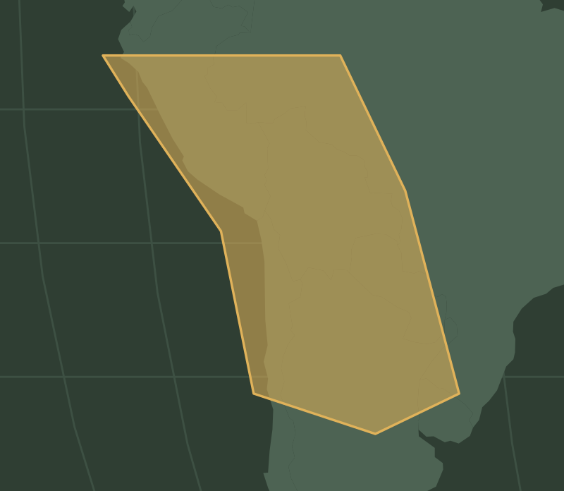

Planta · Fabáceas · Andes centro-sur y tierras bajas vecinas
Cebil
Anadenanthera colubrina (Vell.) Brenan
Un árbol de bosques secos estacionales, conocido como vilca en Perú, Bolivia y Chile y como cebil en Argentina. Sus semillas se usaron para un rapé ritual del que hay huellas arqueológicas de unos 4000 años.123
También se llamacebil · vilca · willka · wilca · huilca · huilco · wilco · curupay · curupau · angico · Anadenanthera colubrina var. cebil
- Qué es
- Árbol de bosques secos de la familia de las leguminosas
- Territorio
- Bosques secos estacionales entre 0 y 30 grados de latitud sur
- Parte usada
- Las semillas, molidas, para un rapé ritual
- Principios activos
- Bufotenina, principal
- Empieza y dura
- No hay datos fiables en las fuentes consultadas
- Quién guarda su memoria
- Pueblos de los Andes centro-sur, entre ellos los wichí
Botánica
Un árbol de bosques secos
Anadenanthera colubrina es un árbol de la familia de las fabáceas, conocido en muchos países sudamericanos con numerosos nombres: vilca, huilco, huilca, wilco, willka, curupay, curupau, cebil o angico.2
Habita sobre todo en bosques secos estacionales entre los 0 y los 30 grados de latitud sur.1 La variedad cebil se conoce como vilca o willka en Perú, Bolivia y Chile y como cebil en Argentina.1
Su tanino se usa en la industria para curtir pieles.2
- Familia
- Fabaceae
- Hábito
- Árbol de bosque seco
- Latitud
- Entre 0° y 30° sur
- Variedad
- Var. cebil (Griseb.) Altschul
Memoria y tradición
El rapé de la vilca
La evidencia más antigua tiene unos 4000 años, con hallazgos arqueológicos de Anadenanthera colubrina var. cebil.1
En yacimientos prehispánicos del noroeste argentino se han recuperado semillas de cebil y madera, ya sin trabajar o usada como materia prima.1
Hay evidencia iconográfica, en una escultura de Chavín de Huántar, de la importancia religiosa de la vilca, y se considera que el cebil, que crece al este de los Andes peruanos, es la fuente más probable del rapé psicoactivo de los rituales de Chavín y de centros como Kuntur Wasi.3 Se dice que esas prácticas tienen más de 2000 años.3
Un estudio arqueobotánico identificó restos de vilca y de Nicotiana en Chavín, la evidencia directa más septentrional de su uso prehispánico en los Andes.5
En el noroeste de Argentina, dos cuerpos momificados hallados en 1991 en el Alero I La Matanza llevaban un tubo con material en polvo cuyo análisis buscó confirmar su relación con el cebil.4
También se cree que los tiwanaku usaron las semillas molidas como rapé, y hay informes de uso activo por chamanes wichí con el nombre hatáj.2
En el tiempo
Primeros hallazgos arqueológicos de Anadenanthera colubrina var. cebil.1
Rituales con rapé en Chavín de Huántar y otros centros del Horizonte Temprano.3
Se recuperan dos cuerpos momificados en el Alero I La Matanza, en el noroeste argentino.4
Sus nombres
- vilca / willka
- en Perú, Bolivia y Chile; del quechua
- cebil
- en Argentina
- hatáj
- nombre del rapé entre los wichí
- curupay / angico
- nombres de la región del Chaco y Brasil
En quechua, «willka» se traduce unas veces como «sagrado» y otras como «nieto»; las fuentes no coinciden.2
Territorio y cuidado
Un árbol del bosque seco andino

Qué ayuda
- Conocer el árbol y su historia andina antes que cualquier uso.
- No tratar el rapé como un producto: es parte de una tradición.
- Respetar a los pueblos que lo custodian, como los wichí.
Qué contiene
Bufotenina
El principal componente activo de la vilca es la bufotenina.2
Análisis de semillas de A. colubrina var. cebil y de Acacia visco hallaron bufotenina en ambas en concentraciones muy distintas.6
En un yacimiento de las tierras altas de Lípez, en Bolivia, se identificaron trazas químicas de bufotenina, DMT, harmina y cocaína, lo que sugiere que al menos tres plantas con esos compuestos formaban parte del instrumental chamánico.7
Principal componente activo de la vilca.[2][6]
Identificada en trazas de un contexto arqueológico andino.[7]
La experiencia
Lo que se sabe por la arqueología
Las fuentes consultadas describen sobre todo el contexto ritual y la química; no recogen datos fiables de experiencia ni de duración.13
La experiencia se entendió dentro de rituales colectivos, con herramientas de preparación del rapé abundantes en Chavín.3
Esquema orientativo: cambia con la preparación, la cantidad y la persona.
Investigación
Qué se ha estudiado
La mayor parte de la investigación es arqueológica, etnográfica y química.146
Estudios arqueométricos han demostrado el consumo de coca, vilca o cebil y tabaco en los Andes.7
Alcance de estos datosHay buena evidencia arqueológica y poca investigación sobre sus efectos en personas.
Con cuidado
Lo que conviene saber antes
Para seguir
Libros y medicinas emparentadas
Aparece junto a la vilca en la iconografía de Chavín.
Su componente principal.
Fuentes
De dónde sale cada dato
- Uso del cebil (Anadenanthera colubrina var. cebil) en tiempos prehispánicos y coloniales y en mercados actuales del noroeste argentino, Bolivia y sur del Perú. proquest.com/docview/3103956020.
- Wikipedia. «Anadenanthera colubrina» (Wilco tree). en.wikipedia.org (consultada el 24-11-2026).
- Evidencia iconográfica de la vilca en una escultura de Chavín de Huántar. academia.edu/3788774.
- Pochettino ML, Cortella AR, Ruiz M. Hallucinogenic snuff from northwestern Argentina: microscopical identification of Anadenanthera colubrina var. cebil in powdered archaeological material. Economic Botany. sedici.unlp.edu.ar.
- Evidencia arqueobotánica de vilca y Nicotiana en Chavín de Huántar. repositorio.pucp.edu.pe.
- Gili F, Carrasco C, Niemeyer HM. Vilca, un encuentro de aproximaciones: antecedentes y herramientas para su búsqueda en contextos arqueológicos del centro-sur andino. redalyc.org/pdf/326/32649574007.pdf.
- Análisis arqueométrico de parafernalia chamánica en Lípez, Bolivia. pmc.ncbi.nlm.nih.gov/articles/PMC6561276.
- Mapa APDER, con datos de Natural Earth · dominio público
- Dibujos de moléculas APDER
Última revisión: 24 de noviembre de 2026. Si ves un error, escríbenos a info@apder.org.